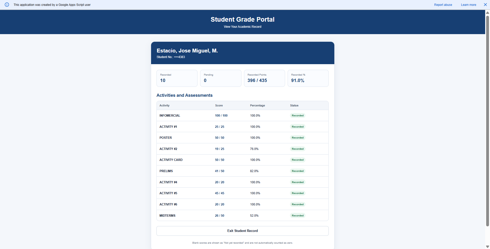

dx/dev: Calculus Through a Developer's Eyes
How rates of change and limits show up in the code I write.
- Student
- Jose Miguel M. Estacio
- Program
- 2nd Year, IT-WEBDEV
- Subject
- 2CALC-IT
- Instructor
- Jonathan Santos Mallari
- Term
- First Semester, Finals
Drag the slider. The yellow line is the tangent: its slope is the derivative f'(x) = cos(x).
About Me
Hi, I'm Jose Miguel M. Estacio, a second-year student in the IT-WEBDEV program at Holy Angel University. I want to become a full-stack developer, so I can work on both the part users see and the part running behind it.
I like building web pages and connecting them to data. I learn the most when I'm fixing bugs, and I want to get better at both front-end and back-end.
When this course started, I thought Calculus had nothing to do with programming. I knew it was used in things like animation and graphics, but I couldn't see how. I hoped to learn how to solve problems step by step and to understand why the formulas work instead of just memorizing them. This portfolio shows how my thinking changed. Check My Growth and my Final Reflection to see how.
Portfolio Overview
Student
Name: Jose Miguel M. Estacio
Program: 2nd Year, IT-WEBDEV
Section: WD-202
Course
Subject: 2CALC-IT
Instructor: Jonathan Santos Mallari
Term: First Semester, Finals
Submissions
Artifacts shown:
Recorded points: 396 / 435 (91.0%)
Topics: Functions, Limits, Differentiation, Exams
My Calculus Journey
These are the topics we covered in 2CALC-IT. Each one links to the artifacts that show my work on it.
Functions and Function Operations
We learned to add, subtract, multiply, and compose functions. In a composition like (f∘g)(x), g(x) goes inside f, so the order matters.
Limits
We learned what a limit is and how to find one by plugging in the number, factoring, or using the conjugate when the result is 0/0.
Rules of Differentiation
We learned the constant, power, sum, difference, product, quotient, and chain rules, and how to rewrite roots as fractional exponents.
Learning Artifacts
My work is grouped by type: activities, examinations, and group projects. Each card has the title, topic, a short description, the artifact, and my reflection. Click any image to make it bigger. My Growth shows how my scores changed, and Calculus in IT shows where this connects to my field.
Calculus in IT and Web Development
Rate of change: UI animation
When you animate something with CSS or JavaScript, you are changing its position over time. Speed is the derivative of position. Easing like ease-in and ease-out just controls how that speed changes, so the movement feels smooth instead of jumpy.
Optimization: performance
Optimization means finding the best value, like the fastest or the smallest. A derivative equals zero at a high or low point. In development it is like choosing a cache size or batch size that gives the lowest load time.
Limits: getting close to a value
A limit is the value something gets close to, even if it never reaches it. Programs use this idea when they repeat a step until the change is tiny. A 0/0 expression also has to be rewritten before a computer can calculate it.
My Growth in Calculus
Early work
Activity #2 on rational limits was my lowest activity score at 19/25 (76%). Limits were the first topic where plugging in the number didn't work, so I had to learn to fix a 0/0 first. I lost 6 points here, so it's clear that limits needed more practice.
Later work
My differentiation activities were 20/20 (Activity #4), 45/45 (Activity #5), and 20/20 (Activity #6). Picking the right rule and showing every step got a lot easier compared with the limits activity.
What changed and why
I started labeling the parts of a problem before solving it: the inner and outer function for the chain rule, and u and v for the product and quotient rules. I also checked if a limit was 0/0 before plugging in the number. This cut down my careless mistakes. My exams were different though: 41/50 on the prelim and 26/50 on the midterm, so using the rules on my own under time pressure is what I need to work on.

Final Reflection
Taking 2CALC-IT changed how I see Calculus. At first I thought it was just a theory subject that had nothing to do with programming. By the end of the semester I learned that Calculus is mostly about change: how fast something changes and what value it gets close to. Those ideas show up in software, like animations and performance tuning.
The most important topics I learned were functions and their operations, limits, and the rules of differentiation. Limits taught me to look at what a function gets close to, and to fix a 0/0 by factoring or using the conjugate instead of guessing. Differentiation taught me to pick the right tool: the power rule for single terms, the product and quotient rules for combined expressions, and the chain rule for a function inside another function. By my scores, limits were the hardest for me. I got 19/25 on Activity #2, my lowest activity result, because plugging in the number doesn't work there and the expression has to be rewritten first.
The way I solve problems changed too. Early on I rushed to get an answer. Later I wrote out each step, labeled the parts, and checked my result. It's kind of like debugging: break the problem into pieces, test each one, and find where the error started. My activity scores stayed high, but my exam results dropped from 41/50 on the prelim to 26/50 on the midterm. That showed me that finishing activities with my notes is not the same as remembering the rules on my own. Differentiation was the topic I did best in, with full marks on Activities #4, #5, and #6, while my lowest results on limits and the midterm showed me where my method was weakest.
Calculus is also useful for my goal of becoming a full-stack developer. Rates of change explain how animations and easing work on a page, optimization applies to tuning performance, and limits show up in programs that repeat a step until a value settles. The chain rule is even behind how machine learning models are trained. I won't be solving these by hand every day, but knowing them helps me understand the tools I use.
I still need to get faster and more accurate under time pressure. I started the course expecting Calculus to be separate from programming, and by the end I could name specific places where it shows up in my field. That changed how I see the subject. In future subjects and work, I want to keep using the habits this course gave me: breaking problems into parts, checking each step, and learning from my mistakes.
References and Acknowledgments
- Course materials: lecture notes, activities, and exams from Jonathan Santos Mallari.
- Tools: HTML, CSS, and JavaScript, with no external libraries.
- AI assistance: I coded the whole portfolio by myself using HTML, CSS, and JavaScript. I only used Claude (Anthropic) to help me come up with some ideas and suggestions, especially for the design and content. I did the actual coding, editing, and putting everything together. The scores, group works, photos, screenshots, reflections, and other information in the portfolio are also based on my own work and experience.
- Where these appear: group work and the score screenshot are in Learning Artifacts and My Growth.
- Other sources: the group poster, card deck, and infomercial were made by my group in WD-202 (members are listed on the poster). Scores come from the class grade portal. The heading font is Kalam from Google Fonts.